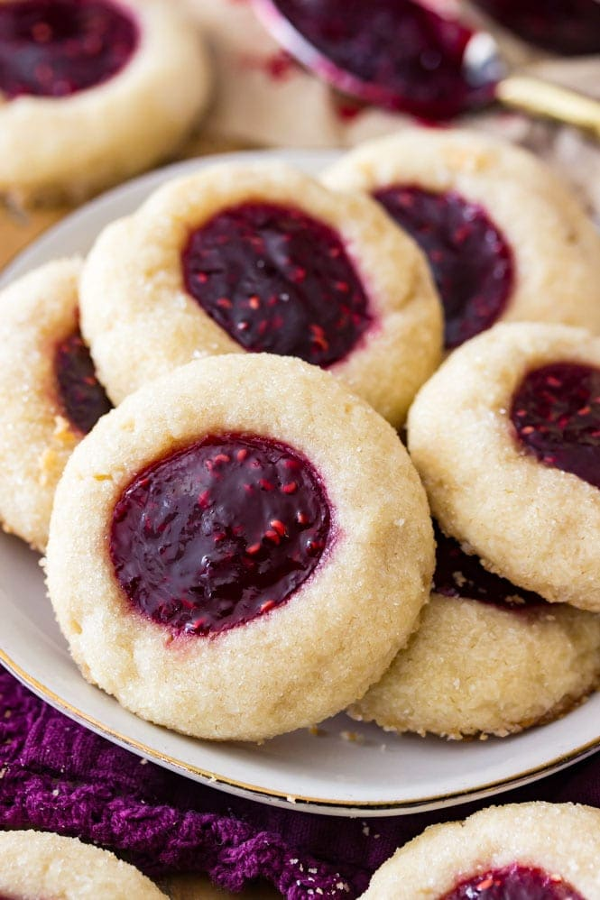

Ingredients
- 1 cup (226 g) unsalted butter softened to room temperature
- 1/3 cup (70 g) sugar
- 1/3 cup (70 g) light brown sugar, tightly packed
- 1 large egg yolk
- 3/4 teaspoon vanilla extract
- 2 1/4 cup (280 g) all purpose flour
- 2 teaspooons cornstarch
- 1/2 teaspoon salt
- 1/2 cup sugar for rolling (optional)
- 1/3 cup (105 g) jam or preserves flavor of your choice -- I used raspberry preserves for this recipe
Instructions
- Place butter in the bowl of a stand mixer (you may instead use a large bowl and an electric hand mixer) and beat until creamy.
- Scrape down the sides of the bowl, add sugars, and beat, gradually increasing mixer speed to medium-high until ingredients are well-combined (about 30-60 seconds).
- Add egg yolk and vanilla extract and beat well.
- In a separate bowl, whisk together flour, cornstarch, and salt.
- With mixer on low speed, gradually add flour mixture to wet ingredients until completely combined. This dough will seem very dry and crumbly, so be sure to pause occasionally to scrape the sides and bottom of the bowl. If it starts to strain your mixer you can use your hands to finish working the dough together.
- Scoop cookie dough into 1 Tablespoon-sized balls and roll very well (so that the dough is round and there are no cracks/seams in the cookie dough -- this will help keep your thumbprints from cracking).
- Roll in granulated sugar (if using) and place on a wax-paper covered plate or small cookie sheet. Use your thumb or the rounded back of a teaspoon to gently press an indent in the center of the cookie dough. Repeat until all of the dough has been used.
- Transfer cookie dough to freezer and chill for 30 minutes.
- Once dough is done chilling, preheat oven to 375F (190C) and place your jam in a small microwave-safe bowl. Heat briefly (about 5-10 seconds) or until jam is not hot but is no longer firm and is easy to stir.
- Spoon jam into each thumbprint, filling each indent to the brim.
- Once oven is preheated, place cookies at least 2" apart on a parchment paper-lined cookie sheet and bake on 375F (190C) for 11 minutes or until edges are just beginning to turn golden brown.
- Allow cookies to cool completely on baking sheet before enjoying.